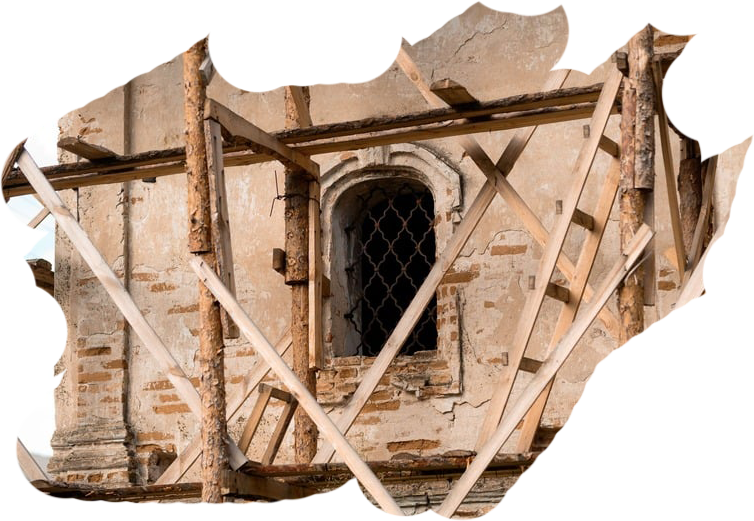

ГО «Фонд збереження національної спадщини “Реальна історія”» заснував Акім Галімов у липні 2025 року для збереження, захисту та популяризації об’єктів національної спадщини України, культурних цінностей, а також національної пам’яті українського народу.
Місія Фонду полягає у збереженні та відновленні об’єктів культурної спадщини України, переосмисленні історичного наративу та поверненні суспільству знання про українські еліти, культуру й державність, а також у формуванні умов для розвитку локальних громад через культуру.
«Ми повертаємо українцям їхню реальну історію через відновлення спадщини, яка формує нашу ідентичність, гідність і зв’язок між поколіннями»

Акім Галімов - український журналіст, продюсер і громадський діяч.
Він створює документально-історичні проєкти, що досліджують українську історію та розвінчують російську пропаганду, зокрема, серед них: «Україна. Повернення своєї історії», «Таємниці великих українців», «Українські палаци. Золота доба», «Рашизм. Історія хвороби», «Спротив» .
З 2022 року Акім є засновником і ведучим проєкту «Реальна історія», який є одним із найбільших YouTube-каналів про історію України.

Починаючи з 2024 року, Акім та його команда працюють над відновленням Покорщини — козацького маєтку національного значення в Чернігівській області. Наразі порятунок Покорщини є основним проєктом організації.
Зараз ми проводимо протиаварійні роботи, які є першим етапом на шляху до відновлення маєтку.
Також у 2026 році наш кейс із відновлення Покорщини увійшов до шортлиста Премії Відповідальності від Фонду родини Богдана Гаврилишина.